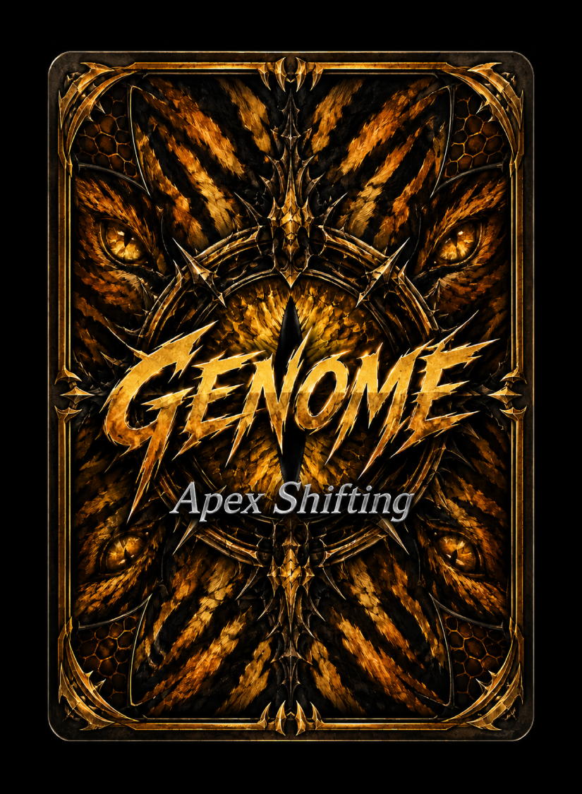

Genome: Apex Shifting
Adapt. Evolve. Dominate.
An original tabletop strategy card game currently in development by GhostWrite Studios.
Genome: Apex Shifting
Before mankind ruled the Earth, the gods ruled mankind.
The Age of Humanity
Long before recorded history, the gods did not wage war against one another directly. Instead, they chose champions. Entire civilizations became extensions of divine ambition.
Odin rallied the Vikings. Zeus commanded the Greeks. Tyr and Ares each forged warriors in their own image. Ra watched over Egypt. Amaterasu guided Japan. Every pantheon cultivated its people, believing their followers would one day establish the dominant civilization of the world.
Every conquest, every crusade, every empire was another move in a game played by immortal hands.
The Great Disappointment
Time, however, changed mankind.
Humanity grew independent. Faith weakened. Nations stopped belonging to gods and instead belonged to themselves. Men no longer marched because Odin commanded them. They marched because kings demanded it. They no longer sacrificed for Zeus. They questioned him.
The gods had not lost their power. They had lost their influence.
Loki's Proposal
It was Loki who first spoke the idea aloud.
If humanity had become too unpredictable, then why continue relying upon them at all?
Why wage wars through creatures capable of doubt, rebellion, and free will... when evolution itself could become the battlefield?
The other gods laughed. Then they listened.
The Apex Shift
The pantheons abandoned humanity as their chosen armies and turned their attention toward life itself.
Ecosystems became kingdoms. Evolution became a weapon. Predators were reshaped. Species were rewritten. Every mutation was intentional. Every adaptation served a god.
The old wars never ended.
They simply found new soldiers.
About the Game
Genome: Apex Shifting is a competitive trading card game where evolution is your greatest weapon.
Build thriving ecosystems, unleash powerful creatures, splice Genes, infect your enemies with devastating Afflictions, manipulate the Climate, and evolve ordinary wildlife into terrifying Hybrid Apex predators.
Every decision changes the balance of your ecosystem. Every creature can become something greater... or become food for something else.
Victory comes by reducing your opponent's Dominance to zero, but there are countless ways to get there. Overwhelm them with predators. Spread disease through their ecosystem. Adapt your creatures with powerful genetic enhancements. Or evolve legendary apex organisms capable of rewriting the battlefield.
Five Alpha Starter Decks
Every Alpha Starter Deck represents a unique ecosystem and a different philosophy of survival. No two decks play alike. Each rewards a completely different approach to evolution, combat, and adaptation.
-
🌿 Rot Garden Delirium
Death fuels new life. Fungi, parasites, scavengers, and decomposers transform every fallen creature into an opportunity for explosive growth. -
❄ Frostfang Titans
Towering predators dominate frozen wildernesses through overwhelming strength, precision strikes, and colossal hybrid evolution. -
🌊 Stormtalon Depths
Master the oceans and mountains with devastating natural disasters, information control, and relentless evolutionary tempo. -
🌾 Honeyfang Hunters
Fast predators, venomous reptiles, swarming insects, and aggressive genetic enhancements overwhelm opponents before they can stabilize. -
🏜 Sandsting Nightmares
Strike from the dunes with coordinated Pack tactics, deadly venom, mirages, and relentless battlefield pressure.
Evolution Never Ends
Every creature can be enhanced with Genes. Every Gene can reshape the battlefield. Every Hybrid represents years of impossible evolution condensed into a single terrifying organism.
No two games unfold the same way. Every ecosystem evolves differently. Every battle tells a new story.

Join the Evolution
Genome: Apex Shifting is currently undergoing Alpha Testing in San Diego, California.
Every game played helps shape the future of Genome. New mechanics are refined, creatures evolve, and player feedback directly influences the world taking shape today.
If you're passionate about strategy games, trading card games, or simply want to help build something from the ground up, we'd love to have you at the table.
Interested in becoming an Alpha playtester? Visit the Contact page and send us a message. We'll get in touch with information about upcoming playtesting sessions in San Diego, California.